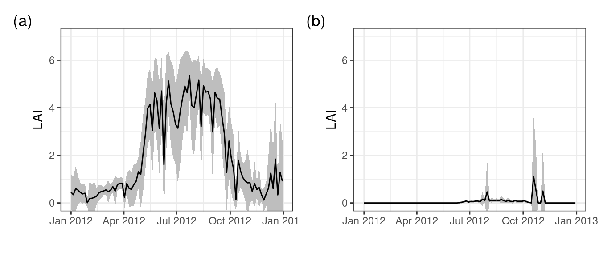

7 Land-Cover classification
In previous sections I’ve explained how seasonality in vegetation canopy density (leaf area inxed, or LAI) or phenology can be detected, and how it varies depending on the geography of the region, and its ties to the exchange of carbon (C) and water between the biosphere and the atmosphere (Chapter 4). A small, first principles, example was provided on how to write your own phenology detection algorithm (Chapter 5).
However, many satellite platforms provide information in various spectral bands (and not only one product in the temporal domain). One can say the data are multi-dimensional, having both a temporal, spatial and spectral component (see Figure 5.2). These various bands, or locations in the spectral domain, provide key insights into the state of the land surface (throughout the year).
For example the combination of information in the red and near-infrared bands (spectral domains) provides key information to calculate the Normalized Difference Vegetation Index (NDVI) (Huete et al. 2002). Other band combinations and or models lead to other indices with varying properties, tailored to specific ecological, geo-morphological or other purposes (Zeng et al. 2022).
When we plot a time series of a deciduous forest you note the steady seasonal changes when switching between winter, with low LAI values, and summer with high LAI values. However, different vegetation and land cover types have different temporal NDVI signals. For example, a glacier will have permanent snow and no seasonal LAI signal. We can therefore discriminate between non-vegetative locations and vegetation based upon the combine spectral and temporal profile of a location.
7.1 Unsupervised machine learning
As such, we can use this (temporal) information across vegetation types to classify the Swiss alpine scene into locations which have little seasonality and those which have some (e.g. Figure 7.1). For example you can calculate the mean and standard deviation of a full year and see how much variability you see across a year. Regions with a low NDVI signal with little variability are most likely not associated with vegetation (e.g. glaciers, see Figure 7.1).
Classification of data in different classes (or clustering) can be accomplished using various methods. Clustering can either be unsupervised, where clustering is only defined by the number of classes one wants to divide the (multi-dimensional) dataset into.
We can use an unsupervised machine learning approach such as k-means clustering to divide the dataset into two or more classes. These classes are clustered in a way which minimizes within-cluster variances, i.e. it ensures that pixels will look similar to eachother (given a target number of clusters k to divide the dataset into).
Here we can use the lai_2012 dataset we previously downloaded, but we’ll use the raster representation as a starting point (as most data will come in multi-layer raster formats).
# conversion from tidy data to a raster format
# as it is common to use raster data
r <- MODISTools::mt_to_terra(
lai_2012,
reproject = TRUE
)As a first step I will convert this raster object back into a dataframe. However, this time it will be a wide data frame, where every pixel location is a row and every column a value for a given date. Alternatively, I could have converted the original lai_2012 data frame from a long format into a wide format using tidyr::pivot_wider(). Every row, representing a year for a given location, is a feature (vector) which contains the information on which the clustering algorithm will operate.
# convert a multi-layer raster image
# to wide dataframe
df <- as.data.frame(r, cell = TRUE)
# the content of a single feature (vector)
# limited to the first 5 values for brevity
print(df[1,1:5]) cell 2012-01-01 2012-01-05 2012-01-09 2012-01-13
43 43 0.693547 1.309657 0.01870939 1.106453We can now use the kmeans() algorithm to classify the data into two distinct groups or centers (k = 2). Note that we drop the first column from our dataframe as this contains the pixel indices, which are needed later on.
# cluster the data
clusters <- kmeans(
df[,-1],
centers = 2
)
# use the original raster layout as
# a template for the new map (only
# using a single layer)
r_clusters <- rast(r, nlyr=1)
# assign to each cell value (location) of this
# new map using the previously exported cell
# values (NA values are omitted so a 1:1
# mapping would not work)
r_clusters[df$cell] <- clusters$clusterCode
library(leaflet)
# set te colour scale manually
bin <- colorFactor(
c("#000000", "#FFFFFF"),
domain = unique(values(r_clusters)),
na.color = "transparent"
)
# build the leaflet map
leaflet() |>
addProviderTiles(providers$Esri.WorldImagery, group = "World Imagery") |>
addProviderTiles(providers$Esri.WorldTopoMap, group = "World Topo") |>
addRasterImage(
r_clusters,
colors = bin,
opacity = 0.5,
group = "k-means cluster results"
) |>
addLayersControl(
baseGroups = c("World Imagery","World Topo"),
position = "topleft",
options = layersControlOptions(collapsed = FALSE),
overlayGroups = c("k-means cluster results")
) |>
addLegend(
pal = bin,
values = c(1, 2),
title = "cluster"
)As this is an unsupervised classification we do not know what land cover types are included in this map. However, a quick visual inspection shows that zone 2 predominantly includes glaciers, water bodies, and urban areas (Figure 7.2). The (seasonal) differences in LAI were used in the k-means analysis to minimize the (seasonal) variance between pixels. In particular, our analysis with two classes separates areas with a seasonal dynamic from those without one.
Note that kmeans clustering provides a clustered output and not a model which can be scaled to other locations. The representation of k-means clustering is therefore dependent on the dataset. Furthermore, a simple index as an NDVI or LAI alone does not provide sufficient information to distinguish between more subtle vegetation or land-cover classes (e.g. evergreen forests and or mixed forest types). In short, we need more data and a more sophisticated model driven approach to create an informed model which scales easily to different land cover types.